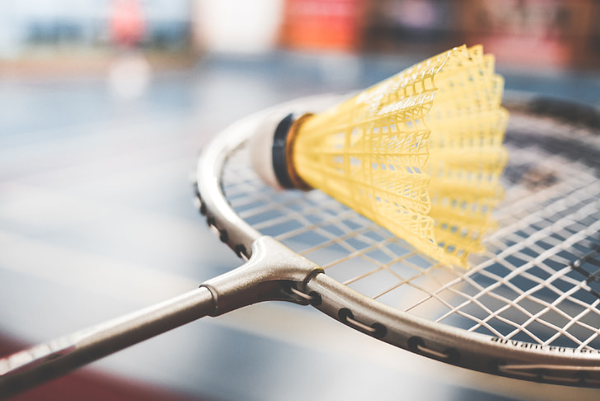

O melhor site para acompanhar os seus esportes favoritos!
O que tá rolando por ai no badminton?
Hoje temos um conteúdo especial, a nossa patrocinadora Braska Importações fez questão de nos informar em primeira mão os 10 melhores atletas mundiais de Badminton (legal, num é?)...inclusive também participaram da competição de verão da Nebraska. Confiram os nomes:
| Top 10 melhores atletas de Badminton - 2024 | |||
|---|---|---|---|
| Nome | Idade | Nacionalidade | Total de medalhas conquistadas nos Jogos Olímpicos e no Campeonato Mundial |
| Lin Dan | 40 anos | Chinês | 7 de Ouro e 1 de Prata |
| Lee Chong Wei | 41 anos | Malaio | 7 de prata e 1 de Bronze |
| Taufik Hidayat | 42 anos | Indonésio | 2 de Ouro, 1 de prata e 2 de bronze |
| Carolina Marin | 30 anos | Espanhola | 3 de Ouro |
| Ygor Coelho | 27 anos | Brasileiro | 0 |
| Obs: embora Ygor não tenha ganho nenhuma medalha em ambas as competições, em diversas como a pan-americanas ele ganhou Ouro e vem se destacando mundialmente | |||